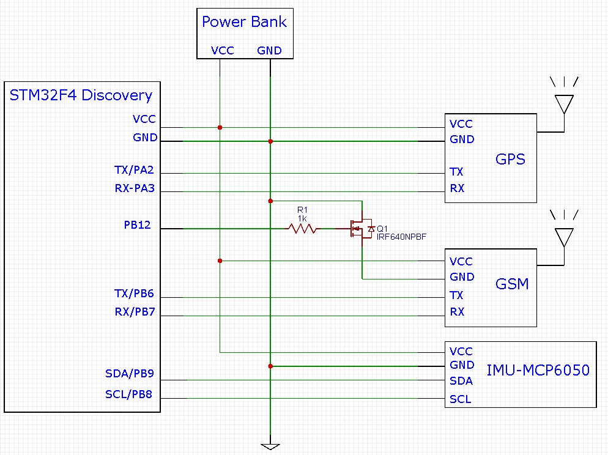

Sistema para monitorerar accidentes de motocicleta y reportar cualquier anormalidad mientras se va en camino.
El enfoque de la idea es encontrrar una manera de ayudar a los motociclistas cuando sufren un accidente, ya que ellos son los vulnerables cuando van en camino. Esta idea surge después de ver el numero de accidentes en la zona metropolitana de Guadalajara.
Un informe consolidado del Observatorio Nacional de Seguridad Vial (ONSV) registró que, de las 7.158 muertes ocurridas en el 2016 por accidentes de tránsito, 3.759 (52 por ciento) fueron motociclistas: indica que cada día murieron 10 en promedio.
Crear un producto que pueda enviar mensajes SMS avisando que ocurrió un percance y la localización del mismo para ayudar a la persona que iba en la motocicleta, al haber un cambio drástico en fuerzas G, calculadas gracias a una IMU.
Se puede reducir el número de fallecimientos por esta causa si tenemos un tiempo de reacción eficaz.
El siguiente esquema muestra todos los módulos conectados a la targeta de desarrollo. Un problema con el que nos topamos fue el acomodo de los pines de la tarjeta. Para esto la montamos sobre una tarjeta agujerada para poder hacer las conexiones. El diagrama a bloques siguiente muestra como fue conectado fisicamente.
En nuestro diagrama a bloques se muestran los módulos requeridos para el desarollo del sistema.
Esta es la manera de como nuestro sistema actua dependiendo de los diferentes eventos posibles.
Para la implemntación de este sistema se utilizo código no bloqueante para no perder tiempo durante la ejecucion, ya que para este caso es critico tener una respuesta rápida al evento.
La IMU solo se puede comunicar vía I2C. por lo que desarrollamos un Header y Source que controlara este módulo y nos diese los valores que necesitamos. Para esto investigamos en la hoja de datos la dirección del módulo, ya que para I2C se requiere conocer la dirección del esclavo. Este módulo manda varios datos cada ves que se le pide, como lo es los valores de X, Y y Z en la aceleración y en el Giroscopio , además de a temperatura.
Para la bandera asociada al mal posicionamiento se maneja solo con los ángulos de X y Y. Se espera hasta atener los suficientes datos para poder hacer operaciones estadísticas como lo es la media y la desviación estándar. Esto se implemento las librerías CMSIS que ofrece ARM. Dado que en camino la moto vibra, esto mete un ruido en las lecturas. Para disminuir esto se utilizó un Filtro Pasa-bajas ponderado mediante una estructura IIR la cual reduce de manera notable este efecto.
Para el cálculo de las Fuerzas G se calcula la magnitud del vector. Para activar la bandera de choque hay que superar la barrera. Según lo que investigamos un Choque a 50Km por hora es equivalente a un vector con magnitud de 3G. Por lo que decidimos que este fuese el factor con el cual se determinara el accidente.
Para los módulos de GSM y GPS, se requiere comunicarse mediante protocolo serial. Para el caso de nuestra tarjeta, no hay problema ya que cuenta con 9 UART por Hardware. Para poder hacer el envió de mensajes SMS se ocupó hacer la detección de las respuestas del GSM, por lo que creamos los archivos Header y Source que hiciesen este proceso.
Queue